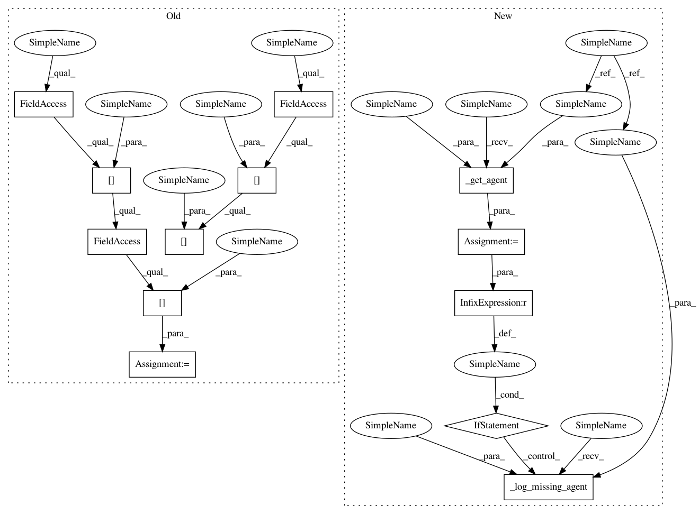

b985e691310c9a2d88b58be2dfecaf9197ea6f5e,parlai/mturk/core/mturk_manager.py,MTurkManager,_handle_partner_disconnect,#MTurkManager#Any#Any#,269
Before Change
Send a message to a worker notifying them that a partner has
disconnected and we marked the HIT as complete for them
state = self.worker_state[worker_id].assignments[assignment_id]
if not state.is_final():
// Update the assignment state
agent = self.mturk_agents[worker_id][assignment_id]
agent.some_agent_disconnected = True
state.status = AssignState.STATUS_PARTNER_DISCONNECT
// Create and send the command
After Change
Send a message to a worker notifying them that a partner has
disconnected and we marked the HIT as complete for them
agent = self._get_agent(worker_id, assignment_id)
if agent is None:
self._log_missing_agent(worker_id, assignment_id)
elif not agent.state.is_final():
// Update the assignment state
agent.some_agent_disconnected = True
agent.state.status = AssignState.STATUS_PARTNER_DISCONNECT
// Create and send the command
data = agent.get_inactive_command_data()
self.send_command(worker_id, assignment_id, data)
def _restore_worker_state(self, worker_id, assignment_id):
Send a command to restore the state of an agent who reconnected
agent = self._get_agent(worker_id, assignment_id)
if agent is None:
In pattern: SUPERPATTERN
Frequency: 3
Non-data size: 13
Instances
Project Name: facebookresearch/ParlAI
Commit Name: b985e691310c9a2d88b58be2dfecaf9197ea6f5e
Time: 2017-09-15
Author: jju@fb.com
File Name: parlai/mturk/core/mturk_manager.py
Class Name: MTurkManager
Method Name: _handle_partner_disconnect
Project Name: facebookresearch/ParlAI
Commit Name: b985e691310c9a2d88b58be2dfecaf9197ea6f5e
Time: 2017-09-15
Author: jju@fb.com
File Name: parlai/mturk/core/mturk_manager.py
Class Name: MTurkManager
Method Name: _restore_worker_state
Project Name: facebookresearch/ParlAI
Commit Name: b985e691310c9a2d88b58be2dfecaf9197ea6f5e
Time: 2017-09-15
Author: jju@fb.com
File Name: parlai/mturk/core/mturk_manager.py
Class Name: MTurkManager
Method Name: _handle_partner_disconnect
Project Name: facebookresearch/ParlAI
Commit Name: b985e691310c9a2d88b58be2dfecaf9197ea6f5e
Time: 2017-09-15
Author: jju@fb.com
File Name: parlai/mturk/core/mturk_manager.py
Class Name: MTurkManager
Method Name: _on_new_message